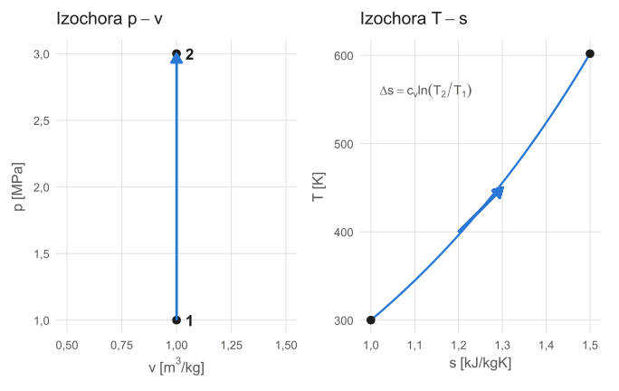
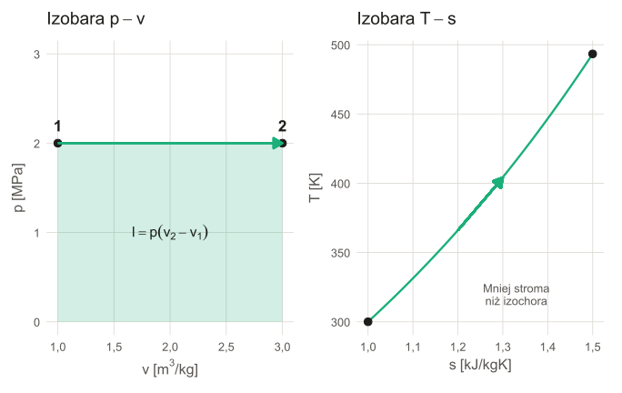
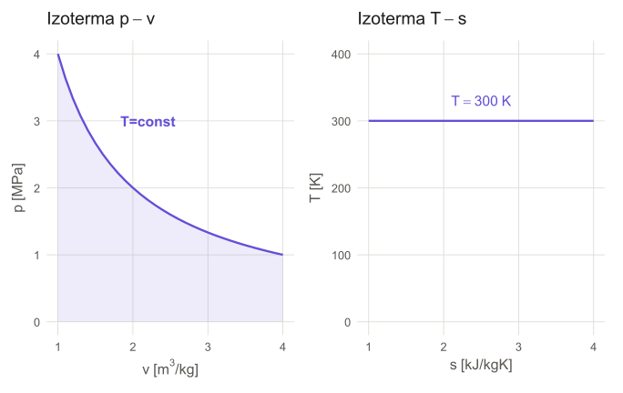
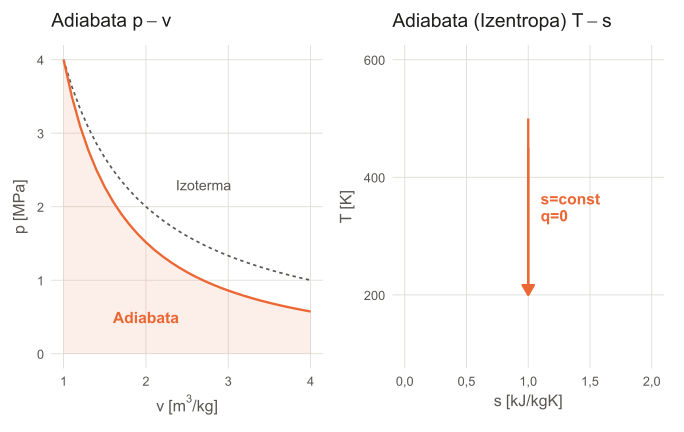
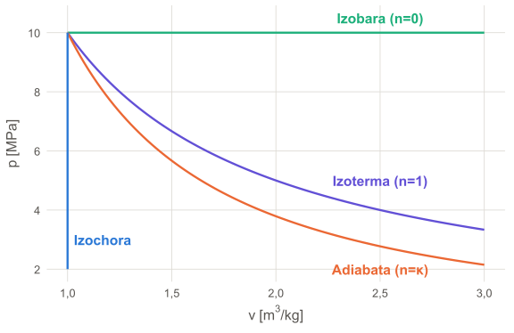

W8: Przemiany Gazów Doskonałych
Analiza Procesów: Izobara, Izochora, Izoterma, Adiabata
prof. UPP dr hab. inż. Marek Urbaniak
Wydział Inżynierii Środowiska i Inżynierii Mechanicznej


Agenda Wykładu
- Proces termodynamiczny (przemiana)
- Metodyka Analizy (Co liczymy?)
- Przemiana Izochoryczna (\(v=const\))
- Przemiana Izobaryczna (\(p=const\))
- Przemiana Izotermiczna (\(T=const\))
- Przemiana Adiabatyczna (\(q=0\))
- Przemiana Politropowa (Uogólnienie)
1. Definicja Procesu Termodynamicznego
Proces termodynamiczny (przemiana) to zmiana stanu układu, w której zmienia się wartość co najmniej jednego z parametrów termodynamicznych (\(p, V, T\)).
- Proces kwazistatyczny: Przebiega nieskończenie powoli, układ w każdej chwili jest w stanie równowagi.
- Proces odwracalny: Możliwe jest przejście odwrotne przez te same stany pośrednie bez zmian w otoczeniu.
I Zasada Termodynamiki – Kontekst
Dla układu zamkniętego w procesie kwazistatycznym I zasada przyjmuje postać:
\[ dU = đQ - đL \]
Gdzie:
- \(dU\) – zmiana energii wewnętrznej
- \(đQ\) – ciepło elementarne wymienione z otoczeniem
- \(đL\) – praca elementarna wykonana przez układ.
Praca Objętościowa
W procesach odwracalnych praca objętościowa wyraża się wzorem:
\[ đL = p dV \]
Znak “+” zgodnie z konwencją przyjętą w W2
Całkowita praca przy zmianie objętości od \(V_1\) do \(V_2\):
\[ L_{1-2} = \int_{V_1}^{V_2} p(V) dV \]
Konwencja znaku: Jeśli \(dV > 0\) (rozprężanie), to \(L > 0\) (układ wykonuje pracę). Jeśli \(dV < 0\) (sprężanie), to \(L < 0\) (siły zewnętrzne wykonują pracę na układzie).
Właściwości Gazu Doskonałego (Przypomnienie)
Podstawowe wzory i zależności:
- Równanie Clapeyrona: \(pV = nR_uT\) lub \(pv = RT\) (dla 1 kg; \(R = R_u/M\) — indywidualna stała gazowa)
- Energia wewnętrzna: Zależy tylko od temperatury, \(du = c_v dT\).
- Entalpia: Zależy tylko od temperatury, \(dh = c_p dT\).
- Równanie Mayera: \(C_p - C_v = nR_u\) lub \(c_p - c_v = R\).
2. Metodyka Analizy
Dla każdej przemiany chcemy wyznaczyć 4 kluczowe wielkości (na 1 kg czynnika). Wszystkie wielkości wyrażamy jako “właściwe”, czyli małe litery.
- Równanie procesu: Związek między \(p\) i \(v\).
- Praca objętościowa (\(l\)): Pole pod krzywą na wykresie \(p\)-\(v\). \[ l = \int p \, dv \]
- Praca techniczna (\(l_t\)): Pole do osi \(p\). \[ l_t = -\int v \, dp \]
- Ciepło (\(q\)): Z I Zasady Termodynamiki. \[ q = \Delta u + l \quad \text{lub} \quad q = \Delta h + l_t \]
Wniosek:
Pamiętamy zawsze: \[\Delta u = c_v \Delta T\] oraz \[\Delta h = c_p \Delta T\]
3. Przemiana Izochoryczna (\(v=const\))
Warunek: \(dv = 0 \Rightarrow l = 0\)
Przykład
Ogrzewanie gazu w szczelnie zamkniętym zbiorniku (szybkowar).
Równanie Stanu (Charlesa)
\[ \frac{p_1}{T_1} = \frac{p_2}{T_2} \Rightarrow \frac{p}{T} = const \]
Bilans Energii (1 kg)
- Praca: \(l = 0\).
- Ciepło: \(q = \Delta u = c_v (T_2 - T_1)\).
- Entropia: \(\Delta s = c_v \ln(T_2/T_1)\).
Izochora: Podsumowanie
- Ogrzewanie (\(T \uparrow\)): Ciśnienie rośnie (\(p \uparrow\)). Entropia rośnie (\(s \uparrow\)).
- Chłodzenie (\(T \downarrow\)): Ciśnienie spada (\(p \downarrow\)). Entropia maleje (\(s \downarrow\)).
- Całe dostarczone ciepło idzie na wzrost energii wewnętrznej: \(q = \Delta u\).
4. Przemiana Izobaryczna (\(p=const\))
Warunek: \(dp = 0 \Rightarrow l_t = 0\)
Przykład
Ogrzewanie gazu w cylindrze pod swobodnym tłokiem.
Równanie Stanu (Gay-Lussaca)
\[ \frac{v_1}{T_1} = \frac{v_2}{T_2} \Rightarrow \frac{v}{T} = const \]
Bilans Energii (1 kg)
- Praca (\(l\)): \(p(v_2 - v_1) = R(T_2 - T_1)\).
- Ciepło (\(q\)): \(\Delta h = c_p(T_2 - T_1)\).
W izobarze ciepło jest równe zmianie entalpii (\(q = \Delta h\)).
Izobara: Podsumowanie
- Ciepło: \(Q_{1-2} = m c_p (T_2 - T_1)\).
- Praca: Część ciepła idzie na wykonanie pracy objętościowej (rozszerzanie), reszta na podgrzanie (wzrost \(u\)).
- Wykres p-v: Linia pozioma.
- Standardowa zmiana entropii: \(\Delta s = c_p \ln(T_2/T_1)\).

5. Przemiana Izotermiczna (\(T=const\))
Warunek: \(\Delta u = 0, \Delta h = 0\) (Dla gazu doskonałego \(u, h = f(T)\))
Przykład
Bardzo powolne sprężanie z chłodzeniem.
Równanie Stanu (Boyle’a–Mariotte’a)
\[ p_1 v_1 = p_2 v_2 = const \]
Bilans Energii (1 kg)
- Praca: \(l = RT \ln(v_2/v_1)\) (zwróć uwagę na znak!).
- Ciepło: \(q = l\) (Całe ciepło zamienia się w pracę).
- Wykres T-s: Pozioma linia prosta (\(T=const\)).
Obliczenia Pracy i Entropii (Izoterma)
Praca (bezwzględna, wykonana przez układ): \[ L_{1-2} = \int_{V_1}^{V_2} \frac{mRT}{V} dV = mRT \ln\left(\frac{V_2}{V_1}\right) = -mRT \ln\left(\frac{p_2}{p_1}\right) \]
Zmiana entropii: \[ \Delta S = \frac{Q}{T} = mR \ln\left(\frac{V_2}{V_1}\right) \] Proces dostarczania ciepła w \(T=const\) powoduje wzrost nieporządku (objętości).
Izoterma: Podsumowanie
- Praca: \(l = RT \ln(v_2/v_1)\) (zwróć uwagę na znak!).
- Ciepło: \(q = l\) (Całe ciepło zamienia się w pracę).
- Wykres T-s: Pozioma linia prosta (\(T=const\)).

6. Przemiana Adiabatyczna (\(q=0\))
Warunek: \(đq = 0\). (Izolacja termiczna)
Wskazówka praktyczna
Dla procesu odwracalnego: Izentropa (\(ds = 0, s = const\)).
Równanie Poissona
\[ p v^\kappa = const \quad \text{oraz} \quad T v^{\kappa-1} = const \]
Bilans Energii (1 kg)
- Ciepło: \(q = 0\).
- Praca: \(l = -\Delta u = c_v(T_1 - T_2)\).
- Rozprężanie: \(T \downarrow\) (kosztem energii wewnętrznej).
- Wykres T-s: Pionowa linia prosta (\(s=const\)).
Wykresy i Właściwości (Adiabata)
- Wykres p-v: Krzywa bardziej stroma niż izoterma (ponieważ \(\kappa > 1\)).
- Wykres T-s: Linia pionowa. Pole pod wykresem (ciepło) wynosi zero.
- Praca Techniczna: \(l_t = \kappa \cdot l = -\Delta h = c_p(T_1 - T_2)\).

Klasyfikacja Procesów Politropowych
7. Przemiana Politropowa (Uogólnienie)
Równanie ogólne dla wszystkich procesów: \[ p v^n = const \]
gdzie \(n\) to wykładnik politropy.
| \(n\) | Nazwa | Warunek |
|---|---|---|
| 0 | Izobara | \(p=const\) |
| 1 | Izoterma | \(T=const\) |
| \(\kappa\) | Adiabata | \(q=0\) |
| \(\infty\) | Izochora | \(v=const\) |
Warto wiedzieć
W sprężarkach tłokowych rzeczywiste sprężanie to politropa z \(1 < n < \kappa\) (chłodzenie cylindra).
Zestawienie Graficzne
Porównanie rozprężania z tego samego punktu
Pole pod wykresem = PRACA.
Najwięcej pracy daje Izobara, najmniej Adiabata (nie licząc Izochory, gdzie \(L = 0\)).

Praca Techniczna w Przemianach
Dla układów otwartych (turbina, sprężarka) liczymy pracę techniczną:
\[ l_t = n \cdot l \] (dla politropy \(pv^n=const\)).
Wzór inżynierski (dla gazu doskonałego): \[ l_t = \frac{n}{n-1} R T_1 \left[ \left(\frac{p_2}{p_1}\right)^{\frac{n-1}{n}} - 1 \right] \]
Uwaga o znaku
Powyższy wzór podaje wartość pracy napędowej (dodatnią przy sprężaniu \(p_2 > p_1\)). W ścisłej konwencji termodynamicznej praca wykonana nad układem jest ujemna (\(l_t < 0\)). Przyjmując tę konwencję, wzór przyjmuje postać:
Praca Techniczna w Przemianach
Dla układów otwartych (turbina, sprężarka) liczymy pracę techniczną:
\[ l_t = n \cdot l \] (dla politropy \(pv^n=const\)).
Wzór inżynierski (dla gazu doskonałego): \[ l_t = \frac{n}{n-1} R T_1 \left[ 1 - \left(\frac{p_2}{p_1}\right)^{\frac{n-1}{n}} \right] \]
- Dla izobary (\(n=0\)): \(l_t = 0\).
- Dla izotermy (\(n=1\)): \(l_t = RT \ln(p_1/p_2)\).
- Dla adiabaty (\(n=\kappa\)): \(l_t = -\Delta h = c_p(T_1 - T_2)\).
gdzie: \(\kappa = c_p/c_v\).
Praca Techniczna w Przemianach
Dla układów otwartych (turbina, sprężarka) liczymy pracę techniczną:
\[ l_t = n \cdot l \] (dla politropy \(pv^n=const\)).
Wzór inżynierski (dla gazu doskonałego): \[ l_t = \frac{n}{n-1} R T_1 \left[ 1 - \left(\frac{p_2}{p_1}\right)^{\frac{n-1}{n}} \right] \]
Wniosek dla Sprężarki
Aby zużyć najmniej prądu na sprężanie gazu, powinniśmy dążyć do izotermy (chłodzić!). Adiabata (brak chłodzenia) wymaga największej pracy technicznej.
Sprężanie Wielostopniowe z Chłodzeniem
Przy dużych stopniach sprężania (w praktyce powyżej \(p_2/p_1 \approx 8\)) temperatura końcowa jest zbyt wysoka — np. powietrze sprężane adiabatycznie od \(20^\circ\text{C}\) przy \(p_2/p_1 = 8\) osiąga ok. \(260^\circ\text{C}\). Rozwiązanie: sprężanie w kilku stopniach z chłodzeniem międzystopniowym.
Optymalne ciśnienie pośrednie
Dla dwóch stopni (minimalna suma prac):
\[ p_{\text{pośr}} = \sqrt{p_1 \cdot p_2} \]
Każdy stopień ma ten sam stosunek sprężania: \[ \frac{p_{\text{pośr}}}{p_1} = \frac{p_2}{p_{\text{pośr}}} = \sqrt{\frac{p_2}{p_1}} \]
Efekty
- Niższa temperatura końcowa (bezpieczeństwo oleju, uszczelek).
- Mniejsza praca całkowita (zbliżenie do izotermy).
- Wyższy stopień sprężania bez ryzyka awarii.
Uogólnienie
Dla \(z\) stopni: \(p_i = p_1 \cdot (p_2/p_1)^{i/z}\), \(i = 1, \dots, z\). W praktyce stosunek sprężania w jednym stopniu nie przekracza ok. 8: powyżej \(p_2/p_1 \approx 8\) stosuje się 2 stopnie, powyżej \(\approx 60\) (\(\approx 8^2\)) — 3 stopnie.
Podsumowanie W8
| Przemiana | \(n\) | Ciepło \(q\) | Praca \(l\) | Praca tech. \(l_t\) |
|---|---|---|---|---|
| Izochora | \(\infty\) | \(\Delta u\) | 0 | \(-v\Delta p\) |
| Izobara | 0 | \(\Delta h\) | \(p \Delta v\) | 0 |
| Izoterma | 1 | \(RT \ln(v_2/v_1)\) | \(q\) | \(l = q\) |
| Adiabata | \(\kappa\) | 0 | \(-\Delta u\) | \(-\Delta h\) |
Kluczowe do Zapamiętania:
- \(q\) zawsze wiąże się z polem pod wykresem T-s.
- \(l\) zawsze wiąże się z polem pod wykresem p-v.
Nasze narzędzia na kolejne wykłady o obiegach silnikowych!
Termodynamika Techniczna (W8)